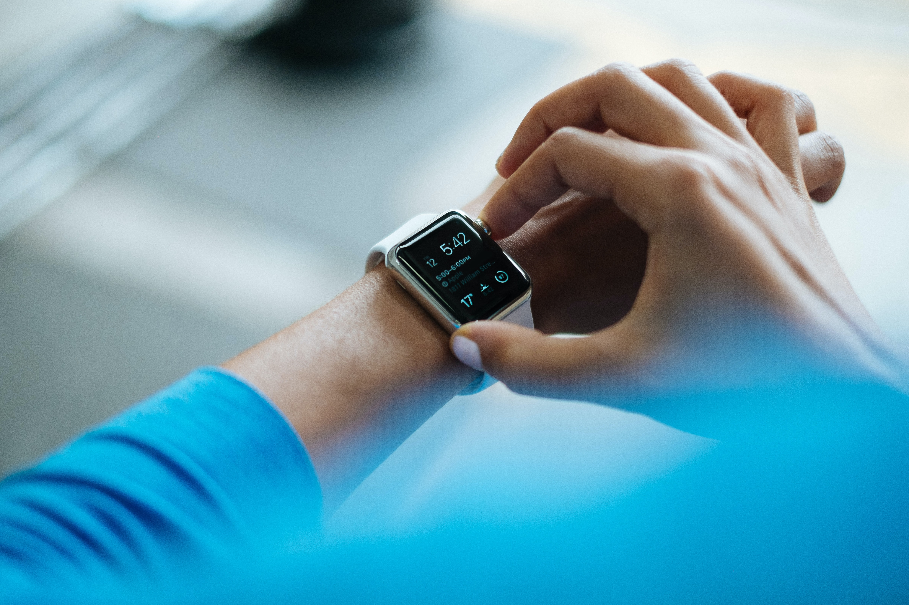

EMASENS
Developing a just-in-time adaptive intervention to prevent smoking lapses
The aim of the EMASENS study is to develop a smartphone-based stop smoking tool which provides personalised support to smokers in real-time, when they most need it (i.e., a ‘just-in-time adaptive intervention’). To provide such personalised support, we first need to understand when to send support and what type of support to send.

In the first stage of the EMASENS study, we aim to gain a better understanding of when and why people are at risk of lapsing (i.e., smoking cigarettes after the quit date). To build a lapse prediction algorithm, we will triangulate findings from two studies using slightly different approaches.
In the first study, we used observational data from a popular smoking cessation app to develop supervised machine learning algorithms to distinguish lapse from non-lapse reports. We used data from app users with ≥20 unprompted data entries, which included information about craving severity, mood, activity, social context, and lapse incidence. A series of group-level supervised machine learning algorithms (e.g., Random Forest, XGBoost) were trained and tested. Their ability to classify lapses for out-of-sample i) observations and ii) individuals were evaluated. Next, a series of individual-level and hybrid algorithms were trained and tested. We found that using unprompted app data appeared feasible for constructing a high-performing group-level lapse classification algorithm but its performance was variable when applied to unseen individuals. Algorithms trained on each individual’s dataset, in addition to hybrid algorithms trained on the group plus a proportion of each individual’s data, had improved performance but could only be constructed for a minority of participants. We therefore deemed it important to repeat the analyses using data from a prompted study design (using both signal- and event-contingent Ecological Momentary Assessments), with results triangulated with those from the present study to arrive at a better understanding of when and why lapses occur.
The second study, for which data collection is currently ongoing (estimated completion in December 2022), is a longitudinal, observational study of prompted psychological data and passive digital biomarkers (i.e., heart rate variability, step count) with repeated outcome measures of lapse incidence within individuals across a 10-day quit attempt. Smokers will be eligible to participate if they: i) are aged 18+ years; ii) smoke cigarettes regularly; iii) reside in London and are willing to visit University College London twice before and after the 10-day study period; iv) own a smartphone capable of running the required study smartphone apps (i.e., Android 8.0 or up; iOS 14.0 or up); v) are willing to set a quit date within 7 days from their initial study visit (preferably the next day to capitalise on their motivation to stop); vi) are willing to wear a Fitbit and respond to hourly surveys for a period of 10 days during regular waking hours; vii) have internet/Wi-Fi access for the duration of the study; and viii) are able and willing to provide an exhaled carbon monoxide (eCO) measure (e.g., people with a diagnosis of asthma or COPD sometimes find it difficult to provide eCO measures). Smokers will not be eligible to participate if they: i) have a known history of arrythmias (e.g., atrial fibrillation), ii) are regularly taking beta blockers (e.g., atenolol, bisoprolol), or iii) have an implanted cardiac rhythm device. During the 10-day study period, participants will receive 16 hourly prompts per day via the m-Path app (i.e., signal-contingent sampling), scheduled within their usual waking hours (e.g., a participant who indicates that they typically wake up at 7am will receive hourly prompts from 7am to 10pm). Each survey will take 2-3 minutes to complete. Responses will be time stamped and interactions need to be completed within 30 minutes. Participants will also be asked to record lapses as and when they occur (i.e., event-contingent sampling) via an in-app button. To promote EMA adherence, participants will be sent regular e-mails with updates on their compliance rate and screenshots of graphs of their survey responses (e.g., cravings, affect), which are automatically generated by the m-Path software.
The key output from the first stage of the EMASENS study will be the selection of an overall best-performing algorithm to take forwards to underpin a just-in-time adaptive intervention (JITAI).
Following the development of the lapse prediction algorithm, in the second stage of the project, we will develop the intervention messages using theory and behaviour change tools (e.g., the Behaviour Change Wheel) in combination with extensive user testing. A bank of intervention messages will be developed, tailored to each identified lapse risk factor and ranked by potential users. Next, the effectiveness of the JITAI will be evaluated in an RCT. This work will form part of Corinna Leppin’s PhD project.